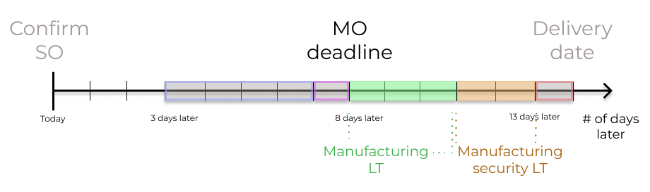

Fechas de los envíos planeados¶
Planificar correctamente las fechas de envío es crucial para cumplir con las expectativas de los clientes. En Odoo, la aplicación Inventario le permite realizar una configuración completa de los plazos de entrega, lo que facilita la coordinación y la planeación de las órdenes de fabricación, de los envíos y de las recepciones.
Tipos de plazos de entrega¶
Diferentes plazos de entrega para diferentes operaciones pueden impactar en varias etapas del procesamiento de órdenes. Este es un resumen de los tipos de plazos de entrega en Odoo:

Plazo de entrega del cliente: el plazo de entrega predeterminado para las órdenes de los clientes. Este tipo de plazo de entrega es el número de días desde la fecha en que se confirma la orden de ventas a la fecha en que los productos se envían desde el almacén. También se le conoce como plazo de entrega del envío.
Plazo de entrega de seguridad para ventas: adelanta la fecha de envío planeada por unnúmero específico de días. Esto es útil como tiempo de seguridad para permitirle al equipo prepara el envío saliente con anticipación, considerando la posibilidad de que haya retrasos en el proceso.
Plazo de entreda de compra: el número de días desde la confirmación de una orden de compra hasta la recepción de los productos. Proporciona un estimado del tiempo que tardan los productos en llegar al almacén y facilita una planeación efectiva para las entregas de los proveedores.
Plazo de entrega de seguridad para compras: adelanta la fecha límite de una orden de compra por un número específico de días. Este enfoque proactivo de anticipar las órdenes disminuye el riesgo de retrasos en los envíos o con el proveedor. Por lo tanto, para los productos configurados en una orden de reabastecimiento, la orden aparecerá un poco antes en el reporte de reabastecimiento de acuerdo con el número especificado de días.
Plazo de entrega para fabricación: el número de días que se necesitan para completar una orden de fabricación desde la fechad de confirmación. Este plazo de entrega incluye los fines de semana (horas no laborales en Odoo) y también se usa para planear una fecha aproximada de producción para un producto terminado.
Plazo de entrega de seguridad para fabricación: adelanta la fecha planeada de la orden de fabricación por un número específico de días. Al usarse junto con una orden de reabastecimiento, el plazo de entrega de seguridad permite que la orden aparezca antes en el reporte de abastecimiento.
Plazos de entrega para ventas¶
Los plazos de entrega para los clientes y los plazos de entrega de seguridad para ventas se pueden configurar de manera automática calculando una fecha esperada de envío en la orden de ventas. Esta fecha asegura que se configuren fechas de envío realistas desde el almacén.
Odoo muestra un mensaje de advertencia si la fecha establecida de envío es antes de la fecha esperada, pues es posible que no sea factible completar la orden para ese tiempo, lo que puede impactar en otras operaciones de almacén.
Example
Una orden de ventas que contiene una vela de coco se confirma el 11 de julio. El producto tiene un plazo de entrega de 14 días y el negocio generalmente utiliza un plazo de entrega de seguridad para ventas en el día 1. Según las entradas de los plazos de entrega, Odoo sugiere una fecha de envío en 15 días, el 26 de julio.

Las siguientes secciones muestran cómo calcular de manera automática las fechas de envío esperadas.
Plazo de entrega para el cliente¶
Establezca el plazo de entrega del cliente en cada formulario de producto en la página de productos. Vaya a , seleccione el producto correspondiente y abra la pestaña Inventario. Luego, en el campo Plazo de entrega del cliente, escriba el número de días calendario necesarios para completar la orden de envío de inicio a fin.
Example
Establezca un plazo de entrega de 14 días para la vela de coco en el formulario del producto. Luego, en la pestaña Inventario, escriba 14.00 días en el campo Plazos de entrega.
Plazo de entrega de seguridad para ventas¶
El plazo de entrega de seguridad de ventas se configura globalmente para el negocio en .
En la página de configuración, en la sección Planeación avanzada, y active la casilla Plazo de entrega de seguridad en ventas.
Luego, escriba el número deseado de días de calendario. Este plazo de entrega de seguridad notifica al equipo para que se preparen los envíos salientes antes de la fecha planeada.
Example
Si el plazo de entrega seguro para ventas se establece en 1.00 día, la fecha programada de una orden de entrega se adelanta por un día. En ese caso, si un producto está programado para su entrega el 6 de abril pero tiene un plazo de entrega seguro de un día, la nueva fecha programada para la orden de entrega sería el 5 de abril.
Entregar varios productos¶
Para las órdenes que incluyen varios productos con diferentes plazos de entrega, puede configurar estos plazos desde la cotización. Haga clic en la pestaña Más información de una cotización y seleccione una Política de envío:
Lo antes posible para entregar los productos tan pronto como estén listos. La fecha programada de la orden de envío se determina al agregar la fecha de hoy al plazo de entrega más corto entre los productos de la orden.
Cuando todos los productos estén listos para esperar a cumplir con toda la orden al mismo tiempo. La fecha programada de la orden de envío se determina al agregar la fecha de hoy al plazo de entrega más largo entre los productos de la orden.

Example
En una cotización con 2 productos, Tapete de yoga y Banda de resistencia, los productos tienen un plazo de entrega de 8 días y 5 días respectivamente. La fecha de hoy es el 2 de abril.
Si en la Política de envío establecida es Lo antes posible, entonces la fecha de entrega programada es de 5 días a partir de hoy, el 7 de abril. Al seleccionar Cuando todos los productos estén listos, la fecha programada se configurará para que sea de 8 días a partir de hoy, es decir, el 10 de abril.
Plazos de entrega para compras¶
Determinar las fechas en las que se pueden realizar órdenes a los proveedores de forma automática ayuda a simplificar el proceso de aprovisionamiento.
Odoo calcula la fecha de recepción del envío del proveedor y la fecha límite de la orden de compra según la fecha en la que se necesita el producto en el almacén. Al trabajar a la inversa desde la fecha de recepción, se toman en cuenta los plazos de entrega del proveedor y los plazos de entrega seguros para determinar la fecha límite de la orden de compra.
Esta fecha límite es la fecha en la cual se debe confirmar el pedido, pues garantizará que llegue a tiempo para la fecha de recepción esperada.

Plazo de entrega del proveedor¶
Diríjase al formulario de un producto para establecer un plazo de entrega del proveedor para las órdenes que llegan al almacén desde la ubicación del proveedor. Vaya a la aplicación .
Después, seleccione el producto deseado y acceda a la pestaña Compras. En la lista de precios editable del proveedor, haga clic en el botón Agregar una línea para ingresar los detalles del proveedor, como el nombre del proveedor, el precio que ofrece por el producto y, por último, el plazo de entrega.
Nota
Puede agregar varios proveedores y plazos de entrega a la lista de precios del proveedor. El proveedor predeterminado y el plazo de entrega seleccionado estarán en la entrada que se ubica en la parte superior de la lista.
Example
En la lista de precios del proveedor del formulario del producto, el Plazo de entrega para el proveedor seleccionado está configurado en 10 días.

Al establecer el plazo de entrega del proveedor, la fecha esperada de llegada del artículo se determina de forma automática como la fecha de confirmación de la orden de compra, más el plazo de entrega del proveedor. Esto garantiza que los empleados del almacén sepan si los productos no llegarán dentro del plazo previsto.
Example
En una orden de compra confirmada el 11 de julio, para un producto configurado con un plazo de entrega del proveedor de 10 días, Odoo establece la fecha de recepción de forma automática para el 21 de julio. La fecha de recepción también aparece como la fecha programada en el formulario de recepción del almacén. Al formulario se puede acceder desde el botón inteligente Recepción que se ubica en la orden de compra.

Plazo de entrega seguro para compras¶
El plazo de entrega seguro para la compra se establece a nivel general para el negocio desde la aplicación .
En la página de configuración, en el encabezado Programación avanzada, ubique la casilla Plazo de entrega seguro para la compra y haga clic en ella para habilitar la función.
Después, escriba el número de días naturales. Al configurar el plazo de entrega seguro también establece un margen que considera las posibles demoras en las entregas de los proveedores.
Example
Si el plazo de entrega seguro para la compra se establece en 2.00 días, la fecha programada de recepción se atrasa por dos días. En ese caso, si un producto está programado para que llegue el 6 de abril pero tiene un plazo de entrega seguro de dos días, la nueva fecha programada para que llegue sería el 8 de abril.

Plazos de entrega de fabricación¶
Los plazos de entrega pueden ayudar a simplificar el proceso de aprovisionamiento de materiales consumibles y componentes que se utilizan para fabricar productos con listas de materiales.
La fecha límite de la orden de fabricación, que es la fecha límite para comenzar el proceso de fabricación y completar el producto para la fecha de entrega programada, se puede determinar si configura los plazos de fabricación y los plazos seguros de fabricación.
Plazo de fabricación¶
Configure el plazo de entrega de fabricación desde el formulario del producto, vaya a la aplicación y seleccione el producto deseado.
En la pestaña Inventario del producto, especifique los días naturales necesarios para fabricar el producto en el campo Plazo de fabricación.
Example
Especifique un plazo de fabricación de 14 días para un producto desde la pestaña Inventario del producto.

Establezca una fecha límite para la orden de fabricación según la fecha de entrega esperada que se indica en el campo Fecha programada de la orden de entrega.
La fecha límite de la orden de fabricación, que es el campo Fecha programada en la orden de fabricación, se calcula al restar el tiempo de fabricación a la fecha de entrega esperada.
Esto garantiza que el proceso de fabricación comience a tiempo para cumplir con la fecha de entrega.
Sin embargo, es importante mencionar que los plazos de entrega solo toman en consideración los días naturales. Los plazos de entrega no tienen en cuenta los fines de semana, los días feriados o la capacidad del centro de trabajo (el número de operaciones que se pueden realizar en el centro de trabajo de forma simultánea).
Ver también
Example
La fecha de envío programada de un producto en la orden de entrega es el 15 de agosto. Fabricar el producto toma 14 días, así que la fecha límite para comenzar a trabajar en la orden de fabricación y cumplir con la fecha correspondiente es el 1 de agosto.
Plazo seguro de fabricación¶
El plazo seguro de fabricación se configura a nivel general para el negocio en la aplicación . En la sección de Planificación, ubique la casilla Plazo de entrega seguro y haga clic en ella para activar la función.
Después, escriba el número deseado de días naturales. Al configurar el plazo de entrega seguro, también establece un margen que considera las posibles demoras en el proceso de fabricación.

Example
Un producto tiene una fecha de envío programada en la orden de entrega establecida para el 15 de agosto. El plazo de fabricación es de 7 días y su plazo seguro es de 3 días. Por lo que la fecha programada en la orden de fabricación muestra la fecha más tardía para comenzar a elaborar la orden de fabricación. En este ejemplo, la fecha planificada en la orden de fabricación es el 5 de agosto.
Ejemplo general¶
El siguiente ejemplo es útil para entender cómo todos los plazos de entrega trabajan en conjunto para garantizar el cumplimiento oportuno de la orden:
Plazo de entrega seguro de ventas: un día.
Plazo de entrega seguro de fabricación: dos días.
Plazo de entrega de fabricación: tres días.
Plazo de entrega seguro de compra: un día.
Plazo de entrega del proveedor: cuatro días.
El 1 de septiembre, un cliente ordena un producto fabricado y la fecha de entrega programada desde el almacén es el 20 de septiembre. Odoo utiliza los plazos de entrega y las reglas de reabastecimiento automatizadas para programar las operaciones necesarias. Para esto, también toma en cuenta la fecha del 20 de septiembre:

1 de septiembre: en esta fecha se crea la orden de venta y una persona encargada de ventas debe confirmarla.
9 de septiembre: la fecha límite para ordenar los componentes. Esto asegurar que lleguen a tiempo cuando inicie el proceso de fabricación (el plazo de entrega del proveedor es de cuatro días).
13 de septiembre: la fecha de recepción programada para los componentes. Al principio la fecha era el 14 de septiembre, pero el plazo seguro de compra de un día hizo que la fecha se adelantara por 1 día.
14 de septiembre: la fecha límite para comenzar con el proceso de fabricación. Esta fecha se calcula al restar el plazo de fabricación de 3 días, y el plazo seguro de fabricación de 2 días, de la fecha de entrega prevista del 19 de septiembre.
19 de septiembre: la fecha programada en el formulario de la orden de entrega indica la fecha de entrega prevista actualizada, al principio se mencionó que correspondía al 20 de septiembre, pero el plazo de entrega seguro de ventas adelantó la fecha por un día.
La planeación de reabastecimiento de Odoo trasforma el proceso de cumplimiento de órdenes de una empresa, establece plazos predefinidos y fechas para ordenar materia prima, además incluye días con un margen en caso de posibles demoras. Esto garantiza que los productos se entreguen a tiempo.